Палітра
Кольори взяті з самих картин: потемніла слива ночі, позолота рам, жар свічки. Рожеве світіння лишилося тільки для привида й вікон маєтку.
Шрифти
Три шрифти з кирилицею, усі під ліцензією OFL і лежать у fonts/.
Ти вільний
Нова сила: Подих
Люди йдуть на звук і на світло, що змінилося. Священник ходить за археологами.
Двісті років у цій темряві… Тепер я можу піти.
Компоненти
Рамка, дошка й пергамент — шматки згенерованих зображень, нарізані на 9 частин, тож розтягуються на будь-який розмір без спотворення кутів.
Кнопки меню
Сили
Підказка над предметом
Випустіть мене…
Картини й матеріали
Згенеровано локально в ComfyUI (Z-Image Turbo): романтичний олійний живопис XIX століття, лак, кракелюр. Файли в art/ui/.
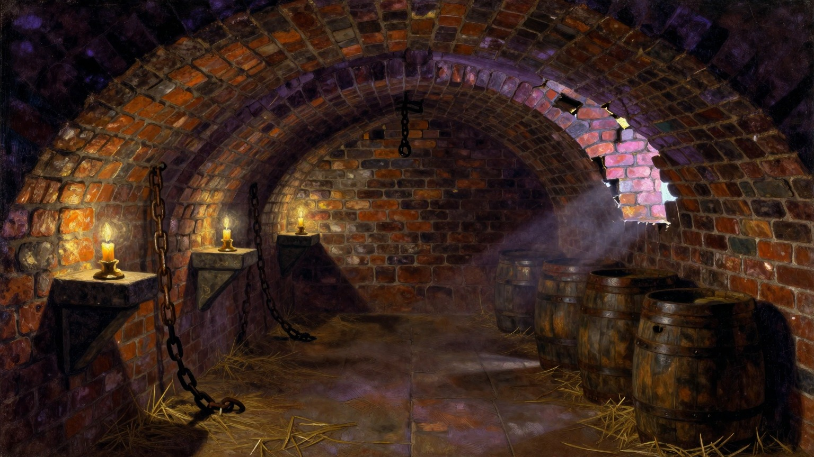
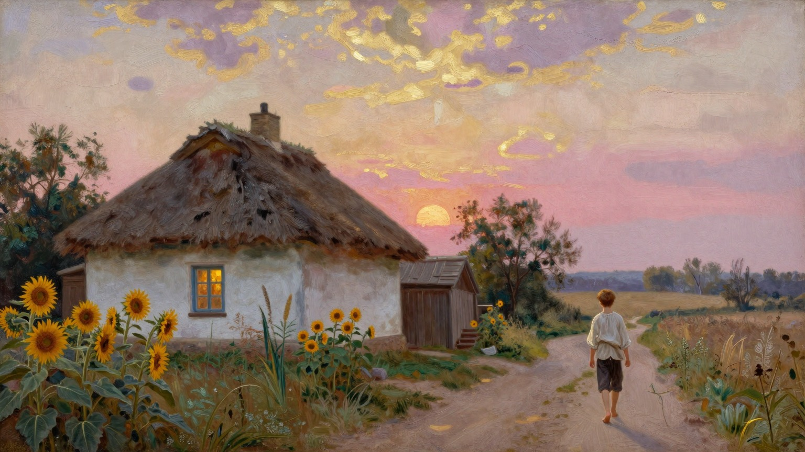
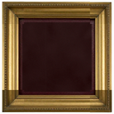
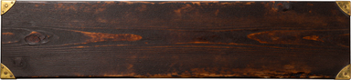
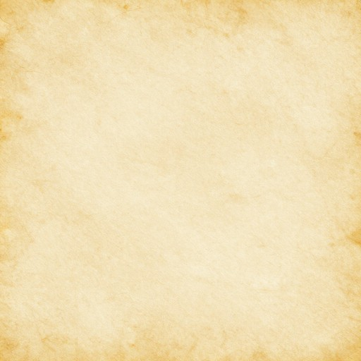
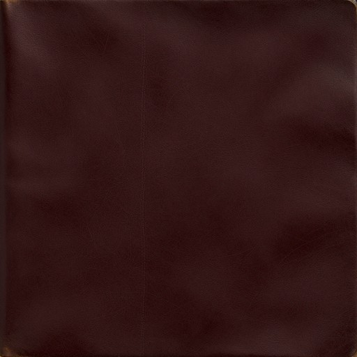
Три версії
Скриншоти з Godot: перший стиль, мультяшна ніч і нинішня «Стара олія».
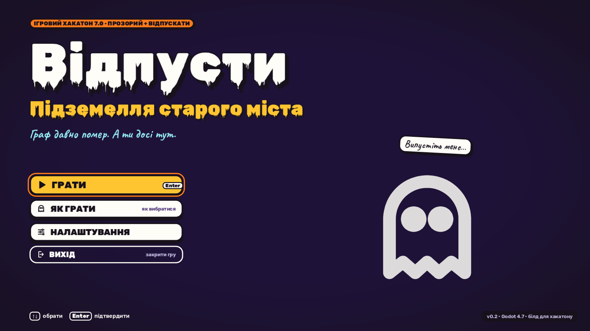
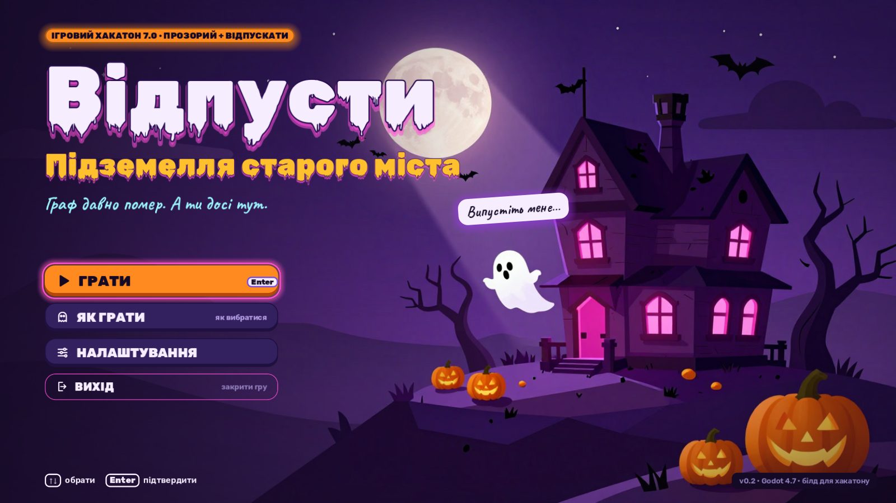
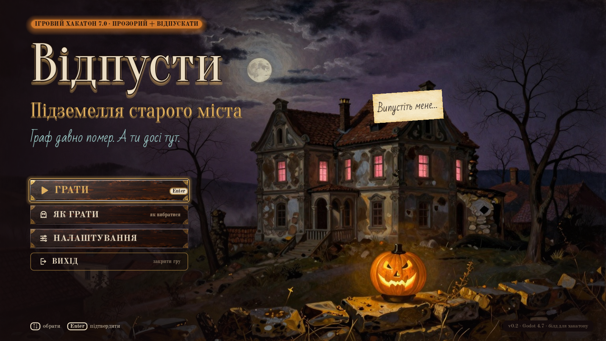
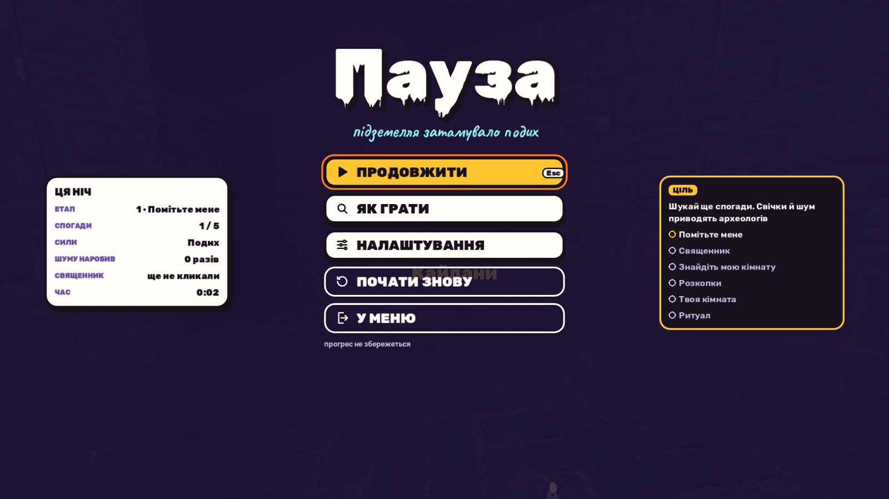
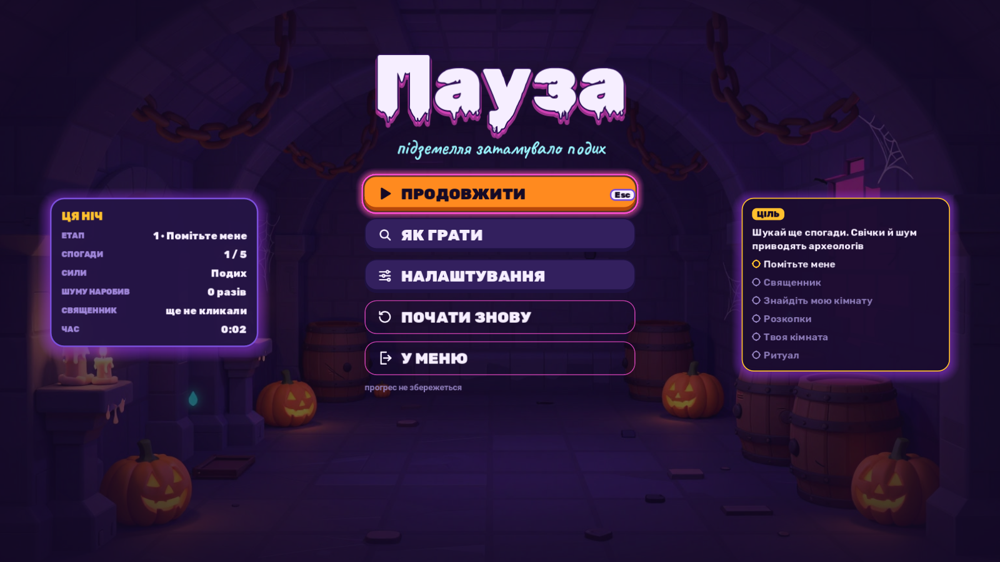
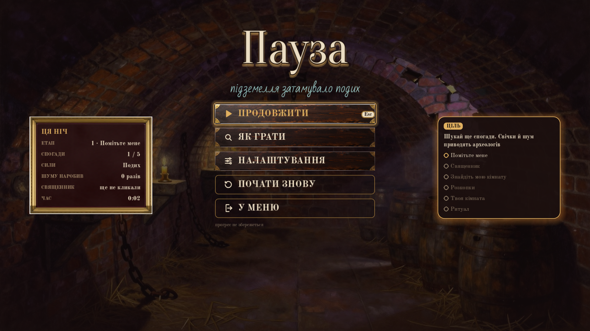
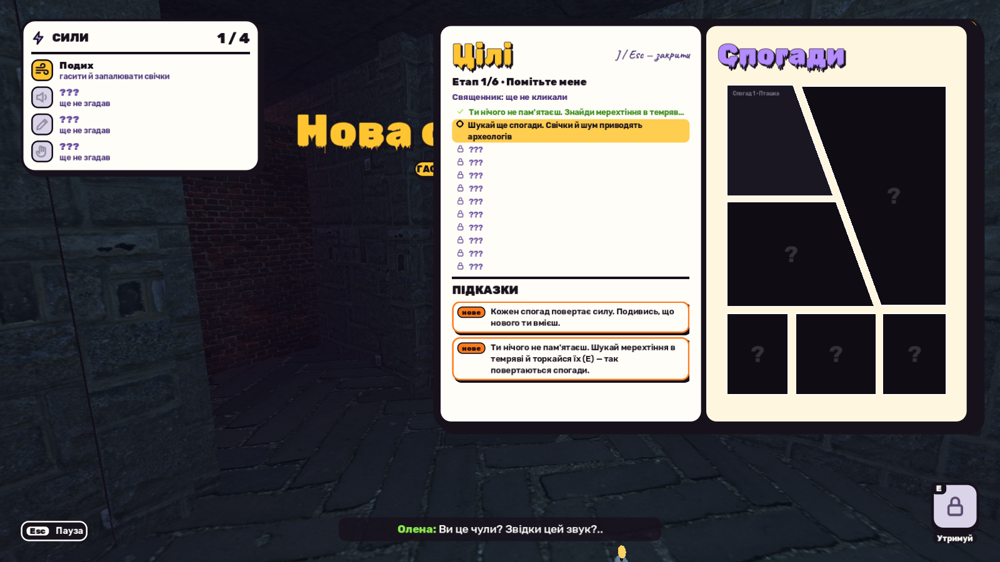
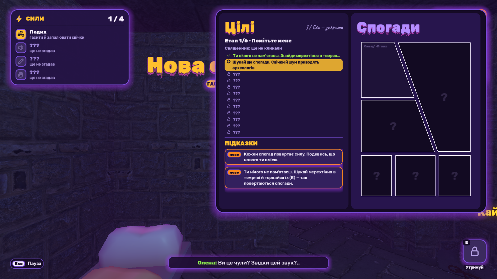
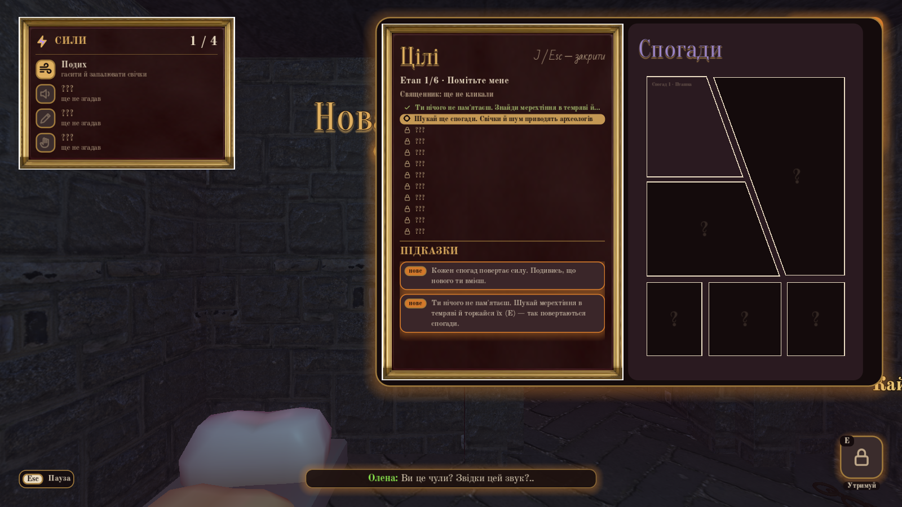
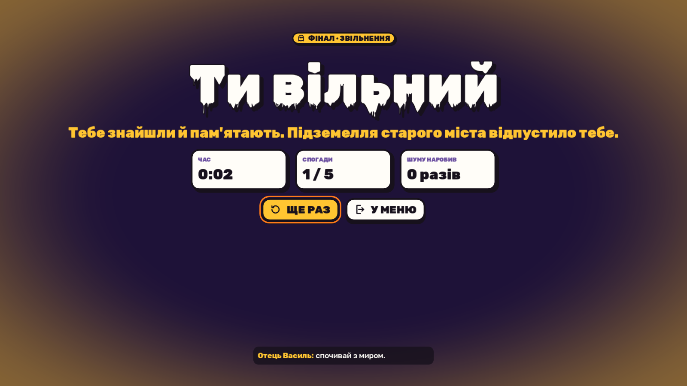
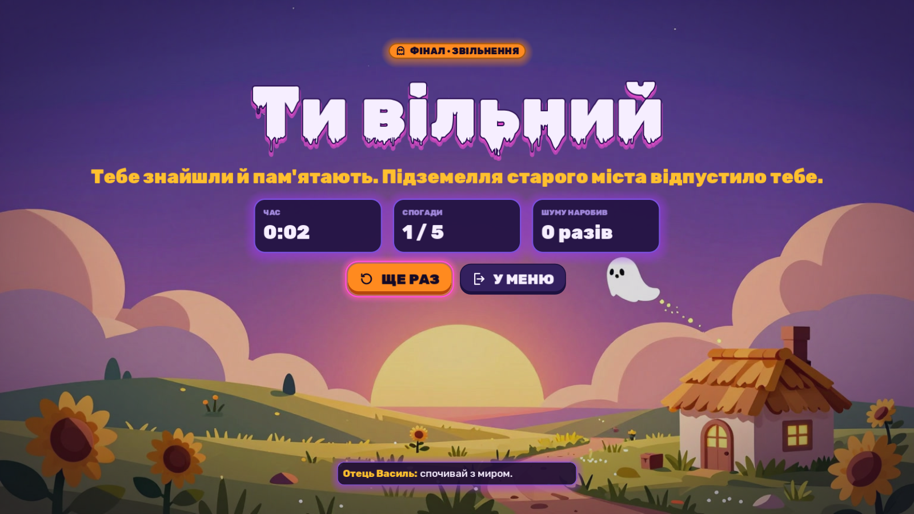
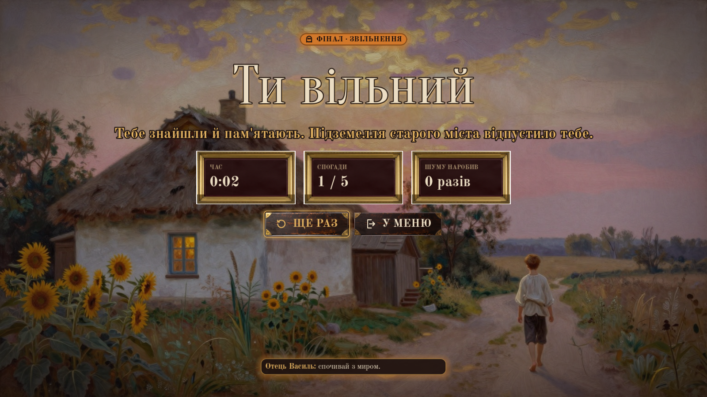